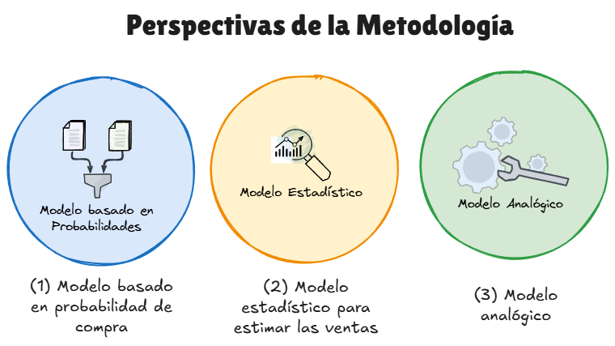
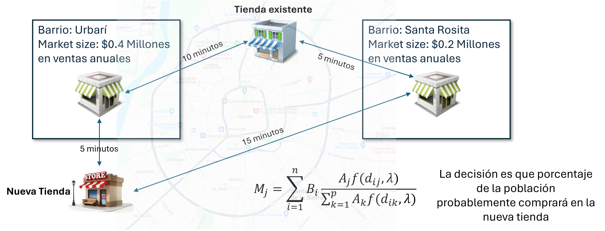
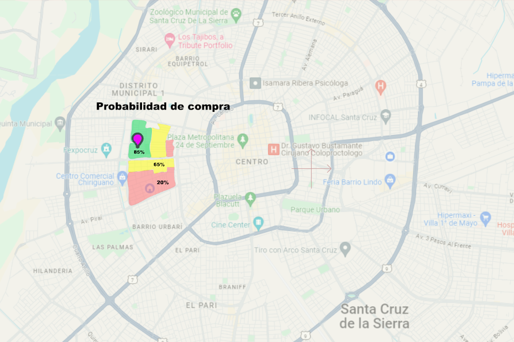
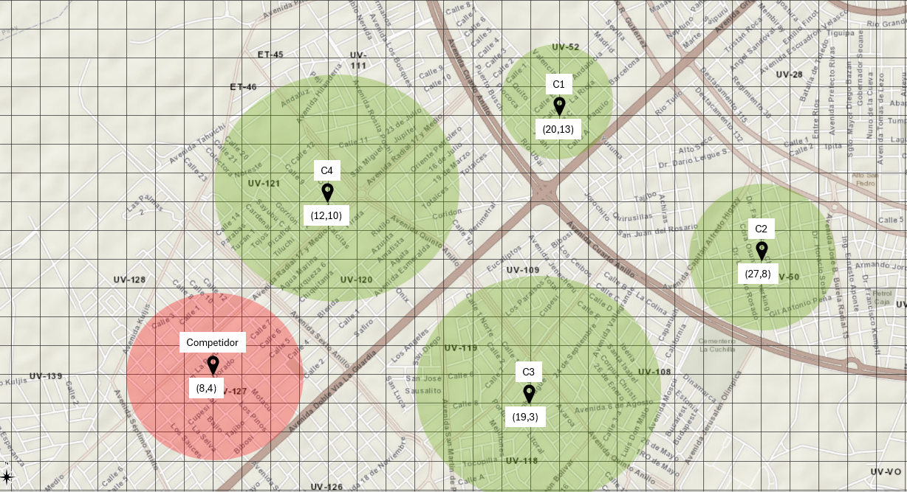
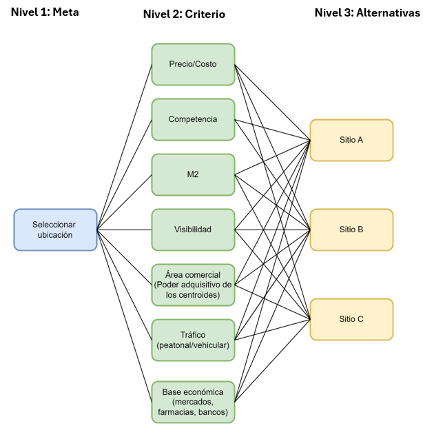
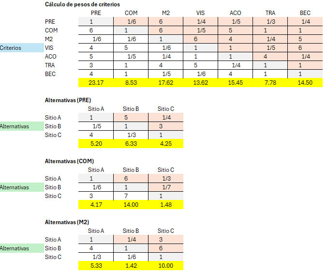

Contexto
La compañía ha estado enfocando sus esfuerzos y estrategias para hacer frente a la competencia mediante la construcción de relaciones con clientes, proveedores y operaciones internas eficientes como fuentes importantes de ventaja.
La ubicación es una fuente generalizada de ventaja en el comercio minorista. La respuesta clásica a la pregunta: ¿Cuáles son las tres variables más importantes en retail? es: ubicación, ubicación, ubicación. La ubicación representa una oportunidad crítica para desarrollar una ventaja competitiva.
En este sentido, la compañía busca contar con un modelo que le permita atraer la mayor demanda de clientes en la zona. A continuación, le presento las características de la solución que le permitirá encontrar la ubicación óptima que maximice la participación de mercado.
Metodología
La solución contempla la presentación de tres enfoques para utilizar la información desde tres perspectivas diferentes sobre el área comercial para estimar las ventas potenciales de una tienda en la nueva ubicación: la perspectivia probabilística (nos proporciona la probabilidad de elección del cliente), la perspectiva estadística (nos proporciona una estimación de las ventas considerando aspectos sociales y demográficos) y finalmente, la perspectiva analógica (nos proporcionará el análisis del área comercial).

Enfoques para estimar la participación de mercado
Modelo probabilístico
Reglas deterministas
Según las reglas deterministas, todos los clientes que residen en el mismo punto de demanda frecuentan la misma instalación.
Regla de proximidad. Propone que los competidores compitan cobrando diferentes precios de fábrica y los clientes seleccionan la instalación que ofrezca el precio de fábrica más bajo más el costo del viaje. Es decir, los clientes frecuentan la instalación más cercana. La regla de proximidad implica que todas las instalaciones cobran el mismo precio y por tanto son igualmente atractivas.
Función de utilidad. El modelo de utilidad es una extensión de la regla de utilidad. Una lista de medidas de calidad \(M, Q_{i}, i = 1, M\), cada uno con un peso de \(W_{i}\) está determinado. La función de utilidad es \(\sum_{i=1}^{M}W_{i}Q_{i}-d\), donde \(d\) es la distancia a la instalación. Un cliente selecciona la instalación que le brinda la máxima utilidad.
Reglas probabilísticas
Según las reglas probabilíticas, los clientes que residen en el mismo punto de demanda dividen su clientela en varias instalaciones competidoras. Puede interpretarse como: “Cada instalación es frecuentada con cierta probabilidad”.
La probabilidad de que un cliente frecuente una instalación es proporcional a su atractivo y disminuye según una disminución de la distancia. El modelo básico se basa en \(p\) instalaciones competidoras y \(n\) puntos de demanda que existen en un área.

Enfoque estadístico para estimar ventas
Se utiliza un modelo estadístico mediante una serie de ecuaciones matemáticas que muestran la asociación entre las ventas potenciales de una tienda y varias variables independientes en cada ubicación; como el tamaño de la población, el ingreso promedio, el número de hogares, los competidores cercanos, las barreras de transporte y los patrones de tráfico.
El enfoque del modelo estadístico que se utiliza proporciona una manera de incorporar factores adicionales en el pronóstico de ventas de una tienda bajo consideración. Se basa en el supuesto de que los factores que afectan las ventas de las tiendas existentes tendrán el mismo impacto en las tiendas ubicadas en los nuevos sitios considerados. La técnica puede considerar los efectos de una amplia gama de factores como visibilidad, acceso, características del área comercial, demografía, segmentos, estilos de vida y otros.
Modelo analógico
Se basa en describir características del sitio y del área comercial de sus tiendas más exitosas e intentar encontrar un sitio con características similares.
Para usar el enfoque analógico se emprenden los siguientes pasos:
- Realizar un análisis competitivo
- Defininir la zona comercial actual
- Analizar las características del área comercial
- Relacionar las características del área comercial actual con los sitios potenciales
Este enfoque es ideal para pequeños minoristas que no cuentan con suficientes datos o tienen un número relativamente pequeño de puntos de venta.
Análisis del área comercial
El primer paso para elegir la ubicación de una tienda minorista (desdel el punto de vista analógico) es describir y evaluar áreas comerciales alternativas y luego elegir la mejor. Un área comercial es un área geográfica que contiene los clientes y clientes potenciales de un minorista o grupo de minoristas en particular para bienes y/o servicios específicos.
El análisis del área comercial proporciona varios beneficios:
- Se examinan las características demográficas y socioeconómicas de los consumidores
- Para una tienda nueva, el estudio del área comercial revela oportunidades y la estrategia minorista necesaria para tener éxito.
- Para una tienda existente, se puede determinar si la estrategia actual aun coincide con las necesidades del consumidor.
- El enfoque de las actividades promocionales está asegurado y el minorista puede observar los patrones de cobertura de los medios de las ubicaciones propuestas o existentes.
- Permite a la cadena minorista descubrir si la ubicación de una nueva tienda propuesta llegará a clientes adicionales o quitará a las tiendas existentes.
- Se destaca las debilidades geográficas (cruce de tráfico, restricciones naturales, puentes, carreteras en masl estado, carriles en sentido único, etc.)
- Se revisan otros factores (competencia, presencia de instituciones financieras, disponibilidad de mano de obra, ubicación de proveedores, etc.)
Resultados
Los resultados de la combinación de los modelos descritos antes se representan en indicar al cliente el punto exacto (geolocalizado) de forma visual, acompañado con la probabilidad de visita, la estimación de la cuota de mercado y el análisis del área comercial.
Aprovenchando el motor de optimización de Microsoft (Solver), se presenta al cliente una demostración funcional del modelo que le permitirá:
- Visualizar el área de interés para la nueva ubicación
- Establecer los puntos de ubicación de la concentración de clientes potenciales
- Permitir al usuario ingresar los datos o inputs de las variables que precisa el modelo para realizar sus cálculos (distancia, metros cuadrados (M2) y ventas estimadas).


Módulo para toma de decisiones
La solución propuesta al cliente proporciona un módulo para facilitar la toma de deiciones. El módulo se basa en la metodología AHP de toma de decisiones multicriterio.
AHP (Proceso Analítico Jerárquico) es un método de toma de decisiones multicriterio que ayuda a resolver problemas complejos descoponiendo el problema en una estructura jerárquica y utilizando comparaciones pareadas para ponderar criterios y alternativas.

Generalmente, un minorista ya establecido con una red de sucursales, tiene que analizar más de 30 variables de forma simultánea, entre ellas: precio, metros cuadrados, base económica, tráfico vehicular, peatonal, características demográficas, carcaterísticas físicas del sito, etc. Aquí es donde AHP demuestra su valor.

Extensiones del modelo
Es posible incporar al modelo condiciones futuras del mercado, como cambios futuros en la demanda. Las condiciones futuras están definidas por un conjunto de escenarios posibles. Para cada escenario existe una ubicación óptima para una instalación que genere la máxima participación de mercado posible para ese escenario. El objetivo es minimizar la máxima pérdida de cuota de mercado en todos los escenarios.
Criterio del umbral
En lugar del objetivo de maximizar el poder adquisitivo total atraído por la cadena, existe un umbral mínimo de poder adquisitivo que debe alcanzarse. Si la cadena no logra atraer el umbral de poder adquisitivo, la empresa fracasa. El objetivo propuesto es minimizar la probabilidad de que la empresa no alcance el umbral.
Criterio líder-seguidor
Buscamos la mejor ubicación anticipándonos a la competencia futura. El líder ubica sus instalaciones y el seguidor (competidor) ubica sus instalaciones conociendo la ubicación del líder. Esta extensión del modelo asume que el seguidor dispone de toda la información necesaria para su decisión de localización. Por lo tanto, el problema del seguidor es el problema estándar de ubicación competitiva. El objetivo es maximizar su cuota de mercado tras la decisión del seguidor.
Ubicación y diseño
Hay un presupuesto limitado disponible. La mejora del atractivo de la instalación depende del presupuesto que se le asigne. Consideramos que la ubicación de una nueva instalación, su atractivo y la posible mejora de las instalaciones existentes están sujetas al presupuesto limitado.
Demanda perdida (Lost demand)
Los clientes pueden elegir un producto sustituto si el producto que buscan se encuentra demasiado lejos. Por ejemplo, si los clientes potenciales están interesados en un restaurante chino pero el más cercano está demasiado lejos, pueden elegir un restaurante no chino que esté cerca o comer en casa.
Canibalización
Minimizar la canibalización de las instalaciones de la cadena al construir otras nuevas. La canibalización en las instalaciones de las cadenas minoristas es un aspecto importante, especialmente en los casos de las franquicias, los franquiciados pueden perder ventas, que pueden ser superiores a las permitidas por el contrato que firmaron con la empresa.
La ciencia de datos y los modelos estadísticos no son un fin sino un medio, el propósito con este producto es ayudar a los minoristas a encontrar las mejores ubicaciones que maximicen su cuota de mercado, ayudar a comprender cómo atraer el mayor poder adquisitivo de las instalaciones de los competidores mediante la construcción de nuevas instalaciones y/o mejoras de las existentes.
¿Están en tu compañía considerando ampliar sus sucursales o puntos de venta?, entonces este producto es para ti.